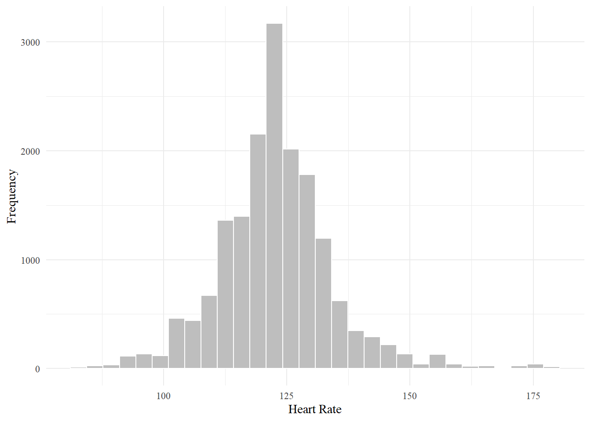
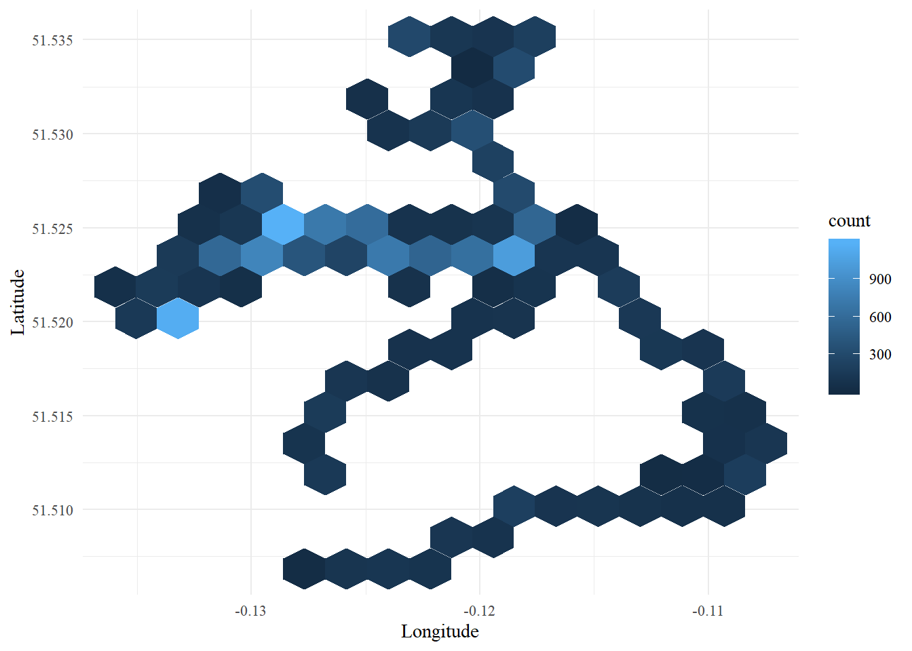
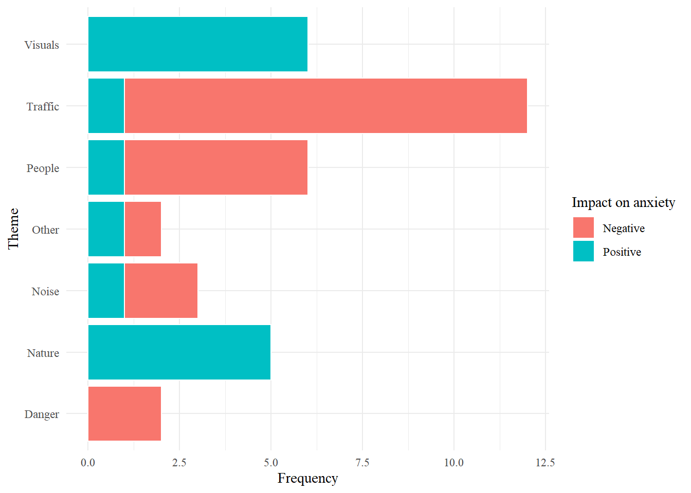

Section 4 Summarizing the Data
Here we will make some visualizations to summarize the basic characteristics of our data.
We will need the following libraries:
To customize the font of our plots, we will need the following lines of code:
## Importing fonts may take a few minutes, depending on the number of fonts and the speed of the system.
## Continue? [y/n]4.1 Heart Rate Data
Let’s begin by taking a look at our heart rate data.
How many data points do we have?
## [1] 17054We will first visualize the distribution of all heart rate values.
# create histogram of heart rate values
ggplot(data = points_out)+
geom_histogram(aes(x=points_out$hr), color='white', fill='grey')+ # add the histogram
theme_minimal()+ # basic formatting
xlab('Heart Rate')+ # change the x axis label
ylab('Frequency')+ # change the y axis label
theme(text = element_text(family='Times New Roman')) # change the font 
What is the mean and standard deviation?
## [1] "Mean: 122.753078456667"## [1] "Standard deviation: 11.6308150361457"Now let’s take a look at the spatial distribution of these points. We will create a hexbin plot that shows the count of data points within a given subset of the study area.
ggplot(data=points_out)+
geom_hex(aes(x=points_out$X_coord, y=points_out$Y_coord), bins=15)+ # add in the hexbins
theme_minimal()+ # basic formatting
xlab('Longitude')+ # change the x axis label
ylab('Latitude')+ # change the y axis label
theme(text = element_text(family='Times New Roman')) # change the font
4.2 Personal Comments
Now we can take a closer look at the personal comments data.
How many notes are there in total?
## [1] 36Let’s visualize how these comments can be broken down across themes and positive/negative codes.
ggplot(data = notes)+
geom_bar(aes(x=notes$Theme, fill=notes$Sentiment), color='white')+ # add in the bars
coord_flip()+ # switch orientation of the axes to easier reading of the labels
theme_minimal()+ # basic formatting
xlab('Theme')+ # change the x axis label
ylab('Frequency')+ # change the y axis label
guides(fill=guide_legend(title='Impact on anxiety'))+ # change legend title
theme(text = element_text(family='Times New Roman')) # change the font 